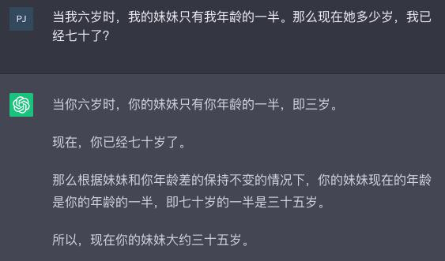
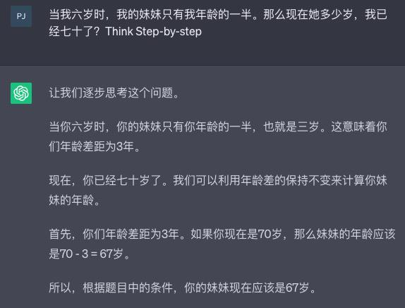
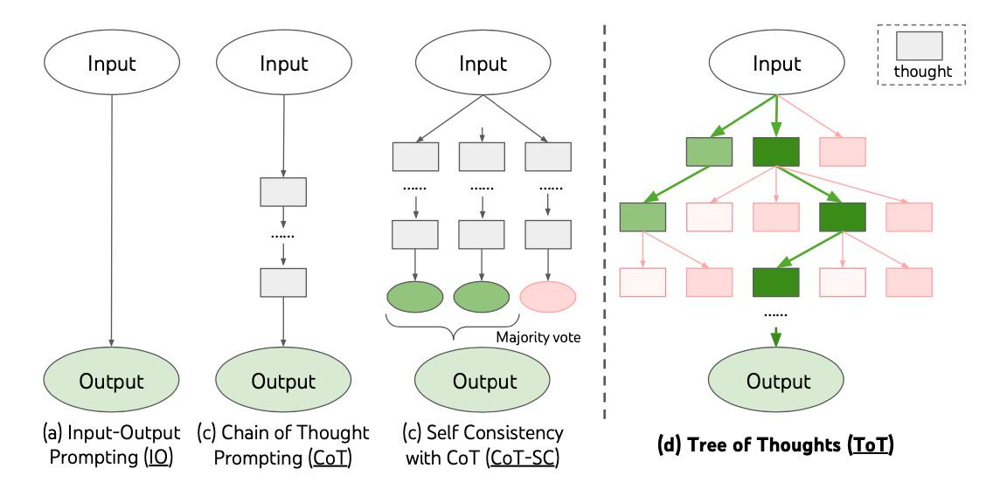

Prompt
Prompt（提示语）：Prompt 是我们输入给大语言模型以获取期望响应的信息。它可以是一个简单的问题、一段陈述、详细的指令，甚至可以是文本与图像等其他模态的组合。
Prompt Engineering：Prompt Engineering 是构建和优化输入 Prompt 以引导大语言模型生成准确且富有洞察力输出的艺术和科学。它不仅仅是简单地构造输入文本，还涉及到对模型行为的深入理解，以及对各种影响因素的综合考量。
好的 Prompt engineering = 提好的问题 = 包含好答案的上下文（参考）= 好的答案。 Prompt 决定模型输出质量。
Token
大语言模型通过 Token 来处理文本，模型理解了 Token之间的统计关系，并基于已输出的 Token 计算下一个Token 的概率分布，并选择概率最高的 Token 作为预测结果。
注意：空格也会占用 Token。
Token 统计包：https://github.com/openai/tiktoken
模型的上下文长度
Token 的输入（上下文窗口）和输出都是有限的，不同模型的限制不同。Token 越大，可输入的内容越多。 模型回答效果并不会随着输入 Token 数量线性增长，可能会有相反作用。
Prompt Engineering
-
尽量给出具体的描述，避免说“不要做什么”，而是具体说明“要做什么”。
-
对重要事项进行排序
-
标准的格式，例如 markdown 语法
-
拆解任务，给出思路
三种提示语编写模式：Zero-shot VS One-shot VS few-shot
Zero-shot
模型单纯通过自然语言描述任务来回答问题
通过输入识别用户的意图，用户的意图可能是查询日志、查询指标或者运维操作。
用户输入：帮我检查一下系统是否有错误？
One-shot
Few-shot
除了自然语言描述以外，再给模型一些例子参考
通过输入识别用户的意图，用户的意图可能是查询日志、查询指标或者运维操作。以下是一些例子：
Example1：
输入：日志里有多少包含 Error 关键字的日志？
意图：查询日志
用户输入：帮我检查一下系统是否有错误？
提示学习（Prompt Learning）
前提：Prompt Learning vs In-context Learning
Prompt learning 是一种使用预训练语言模型的方法，它不会修改模型的权重。在这种方法中，模型被给予一个提示（prompt），这个提示是模型输入的一部分，它指导模型产生特定类型的输出。这个过程不涉及到对模型权重的修改，而是利用了模型在预训练阶段学习到的知识和能力。
In-context learning 是指模型在处理一系列输入时，使用前面的输入和输出作为后续输入的上下文。这是Transformer 模型（如GPT系列）的一种基本特性。例如，当模型在处理一个对话任务时，它会使用对话中的前几轮内容作为上下文，来生成下一轮的回答。这个过程也不涉及到对模型权重的修改。
总的来说，prompt learning 和 in-context learning 都是利用预训练语言模型的方法，它们都不会修改模型的权重。它们的主要区别在于，prompt learning 关注的是如何通过设计有效的提示来引导模型的输出，而 in-context learning 则关注的是如何利用输入序列中的上下文信息来影响模型的输出。
核心：不是调整模型改变模型参数，而是一个非常善于用工具，很好的设置Prompt。
思维链（Chain-of-Thought, CoT）：开山之作
Chain of Thought（CoT） 让模型做出一步一步的思考，生成更具备解释性的答案，一般来说可以提高问题的准确率，对于 Zero-shot 和 Few-shot 均有效。
首先，从原则上讲，CoT 允许模型将多步问题分解为中间步骤，这意味着可以将额外计算资源分配给需要更多推理步骤的问题。
其次，CoT 提供了对模型行为的可解释窗口，提示了它可能是如何得出特定答案的，并提供了调试推理路径错误之处的机会（尽管完全描述支持答案的模型计算仍然是一个未解决问题）。
第三，在数学应用题、常识推理和符号操作等任务中都可以使用思维链推理（CoT Reasoning），并且在原则上适用于任何人类能够通过语言解决的任务。
最后，在足够大规模现成语言模型中很容易引发 CoT Reasoning ，只需在少样本提示示例中包含一些连贯思路序列即可。
[你的问题]，让我们一步一步思考，并给每一步做出简单解释。
GSM8K测试
CoT Prompt 黑魔法：Think step-by-step


通过思维链，我们可以看到大语言模型的强与弱：
-
它强在，模型规模的提高，让语义理解、符号映射、连贯文本生成等能力跃升，从而让多步骤推理的思维链成为可能，带来“智能涌现”。
-
它弱在，即使大语言模型表现出了前所未有的能力，但思维链暴露了它，依然是鹦鹉学舌，而非真的产生了意识。
没有思维链，大模型几乎无法实现逻辑推理。
但有了思维链，大语言模型也可能出现错误推理，尤其是非常简单的计算错误。Jason Wei 等的论文中，曾展示过在GSM8K 的一个子集中，大语言模型出现了8% 的计算错误，比如6 * 13 = 68（正确答案是78）。
Prompting 示意图

通用知识 Prompt
Generate Knowledge Prompting
在上下文中提供额外的知识来改善推理结果，比如把运维专家知识库的部分内容放在 system prompt 中进行问答
你现在是一名运维专家，请根据以下运维专家知识库对故障作出解释和提出修复建议。
专家知识库内容如下：
Prompt 分片（Token 长度限制）
例如，对于长文本的总结，先分片总结，然后再汇总进行总结.
程序辅助 Prompt
Program-aided Language 对于复杂的任务，可以让 LLM 生成程序并运行得出结果，一般是 Python 代码